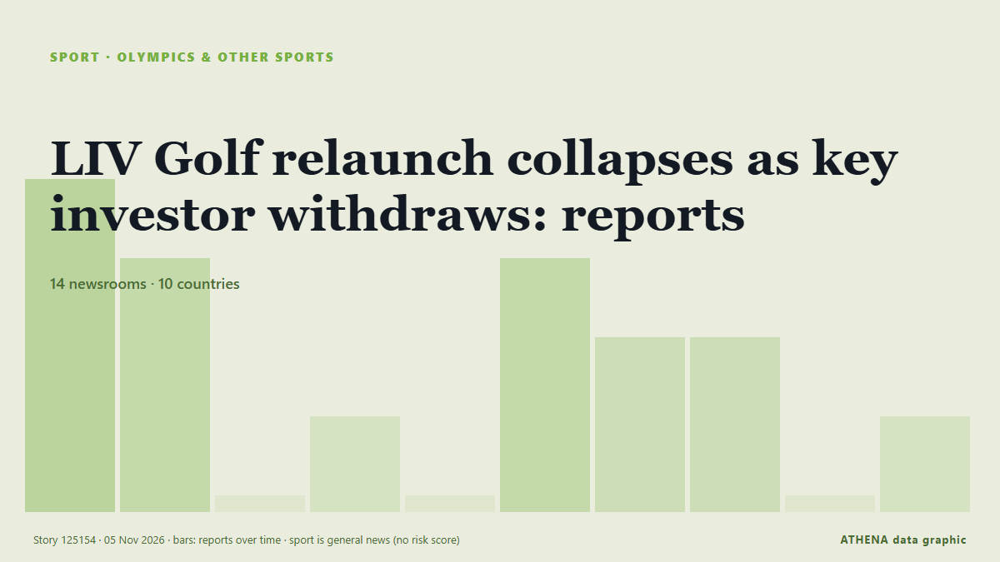

Juegos Olímpicos y más
PatrocinadoPresentado por  Cybernetics and Artificial Intelligence Lab Welcome to the Cybernetics and Artificial Intelligence Laboratory, established at the Department of Business Administration of the National and Kapodistrian University of Athens. The lab is headed by Professor Dimitrios Thomakos. The lab aims to do research that can be published in top venues. Our research uses tools and methods of Artificial Intelligence, and lies in the following areas: - Forecasting - Decision making - Cyber security - Finance We are always looking forward to collaborating with exceptional students!
Cybernetics and Artificial Intelligence Lab Welcome to the Cybernetics and Artificial Intelligence Laboratory, established at the Department of Business Administration of the National and Kapodistrian University of Athens. The lab is headed by Professor Dimitrios Thomakos. The lab aims to do research that can be published in top venues. Our research uses tools and methods of Artificial Intelligence, and lies in the following areas: - Forecasting - Decision making - Cyber security - Finance We are always looking forward to collaborating with exceptional students!
| 23 oct | 0 |
|---|---|
| 24 oct | 0 |
| 25 oct | 0 |
| 26 oct | 0 |
| 27 oct | 0 |
| 28 oct | 1 |
| 29 oct | 0 |
| 30 oct | 0 |
| 31 oct | 0 |
| 1 nov | 2 |
| 2 nov | 5 |
| 3 nov | 9 |
| 4 nov | 5 |
| 5 nov | 1 |
Los titulares se muestran en inglés, tal como se publicaron.

LIV Golf relaunch collapses as key investor withdraws: reports
The LIV Golf tour’s attempt to relaunch has collapsed after BC Partners, the key investor, withdrew its support. de Arab News
Michael Cheika reveals what he wants to achieve with Waratahs in 2027 and responds on links to Wallabies job
The Waratahs' highly rated head coach Michael Cheika has revealed that he has lofty ambitions for his team during the 2027 Super Rugby Pacific campaign. de Planet Rugby
McIlroy backs claims LIV wanted to 'destroy' DP World Tour
Rory McIlroy backs DP World Tour CEO Guy Kinnings' comments saying that LIV Golf started with the intention of 'destroying' the former, as he welcomes a reset in men's golf. de Sky Sports
Jon Rahm makes his opinion clear about Yas Links ahead of Abu Dhabi Aldar Championship
Dubai: Jon Rahm has praised the condition of Yas Links after his first practice round ahead of the Abu Dhabi Aldar Championship, describing the course as one of the best he has encountered. de Gulf News
Qatar sends 15 buses to Senegal ahead of Dakar 2026 Youth Olympics
With just days to go before the start of the Dakar 2026 Youth Olympic Games, 15 buses gifted by Qatar arrived in the Senegalese capital. de Africanews (English)
Jake Paul Faces MMA Star Cedric Doumbe On Christmas Eve In Dubai
Jake Paul will fight French mixed martial artist Cedric Doumbe in Dubai on Christmas Eve as the American makes his comeback after a year out. de The National
US Committee seeks outside investors for new commercial venture
The US Olympic and Paralympic Committee (USOPC) is in the advanced stages of setting up a commercial entity to sell a stake in return for capital, two people with knowledge of the matter told Reuters. de Cyprus Mail
Vultures Complete Tri-Nations Redemption
Financial struggles fail to derail Botswana as national side returns from last year’s withdrawal to dominate Lesotho and Eswatini BONGANI MALUNGA Botswana completed a remarkable turnaround at the… de The Botswana Gazette
Take it as red: Tonga sneak past Samoa in World Cup epic
TONGA survived a close scare in their final pool game of the Rugby League World Cup after beating Samoa 20-18 in front of a record crowd of... de Islands Business (Fiji)
‘India went through a dark phase’: Sachin Tendulkar opens up on captaincy stint
In a recent social media session, cricket legend Sachin Tendulkar shared insights about his captaincy during the 1990s, highlighting the hurdles he encountered, particularly in team selection. de Times of India
NYC Marathon runner, 24, dies after collapsing 2 miles from finish
Rachel Apa of Lewisberry, Pennsylvania, collapsed while running the New York City Marathon on Sunday and later died. de ESPN
California developers eye golf courses for data centre projects
Computer servers are less thirsty than golf courses, say developers. de The Straits Times
Belize City Mayor engages CARICOM and Commonwealth leaders at CHOGM 2026
By Zoila Palma: Today, Bernard Wagner, Mayor of Belize City and Chair of the Commonwealth Local Government Forum (CLGF), continued his high-level engagements at CHOGM 2026 in Antigua and Barbuda… de Breaking Belize News
Funeral of Ciara Mageean hears of memorable wedding shortly before her death
Hundreds of mourners paid a final farewell to the Irish Olympic athletic at a requiem mass in her home town of Portaferry in Co Down. de Evening Standard (London)
Irish Olympian Ciara Mageean was a 'talented and inspirational human being'
‘Devastated’ Lady Mary Peters leads condolences. de Belfast Telegraph
Seoul to turn overlooked neighborhood spots into nighttime attractions
Seoul plans to transform dim riverside paths, neighborhood parks and hilltop viewpoints into nighttime attractions, offering up to 1 billion won ($746,658) per site to encourage evening visits and… de Korea Herald
Glenn Maxwell announces retirement from international cricket
Maxwell, popularly known as 'The Big Show', represented Australia in 149 ODIs, 130 T20Is and seven Test matches. de Times of India
Gabby Williams leads Valkyries to WNBA championship in second season, beating Dream 68-63 in Game 7
SAN FRANCISCO: Gabby Williams scored her team’s final 11 points of the third quarter and dazzled through the fourth on the way to 30 points, and the Golden State Valkyries captured a championship in… de Arab News